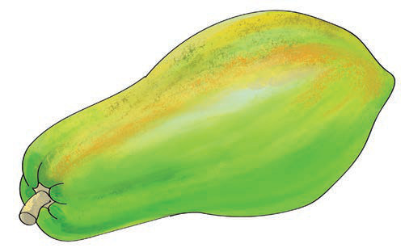
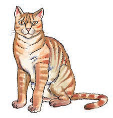
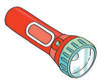

Ninatamka sauti ya herufi p/ Ninabainisha kwa kutumia tahajia za vidole herufi p.
Hii ni picha ya nini?

1. Tamka sauti ya mwanzo ya neno ulilotaja/ bainisha kwa kutumia tahajia za vidole herufi ya mwanzo ya neno hilo.
2. Taja maneno mengine yanayoanza na sauti hiyo/ bainisha kwa lugha ya alama maneno mengine yanayoanza na herufi hiyo.
Taja majina ya picha hizi/ Bainishia kwa kutumia lugha ya alama majina ya picha hizi:


1. Majina yapi yana herufi za mwanzo zinazofanana?
2. Jina lipi lina herufi ya mwanzo isiyofanana na nyingine?